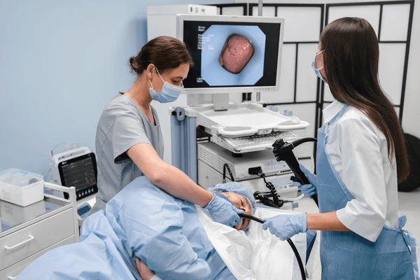

Esta imagen ilustra una gastroscopia (endoscopia digestiva alta) en curso, realizada por un equipo médico en
un entorno clínico.
Sujetos: Una doctora (vestido con uniforme azul y mascarilla) maneja el endoscopio, mientras una
enfermera (con uniforme blanco y mascarilla) asiste en el procedimiento.
Paciente y Posición: Se observa al paciente acostado, probablemente en la posición de decúbito
lateral izquierdo (que es la posición recomendada para este tipo de procedimiento).
Equipo: En el fondo, un monitor muestra una vista detallada del interior del estómago (la mucosa
gástrica), que es la imagen que capta el endoscopio. Esto resalta la tecnología utilizada para el
diagnóstico.
Acción: El médico introduce cuidadosamente el tubo flexible del endoscopio en la boca del
paciente para examinar el esófago, el estómago y el duodeno.

Imagen con licencia: Gastroscopia moderna por Zozulinskyi. Vía
Shutterstock.
Videos
Video: "Viaje alucinante" (generado por Inteligencia Artificial con Google NotebookLM).
Fuentes primarias utilizadas: